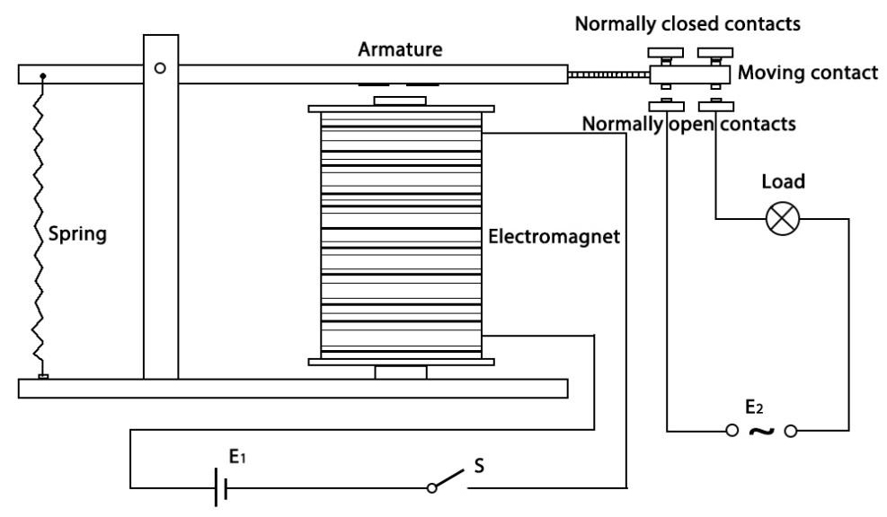
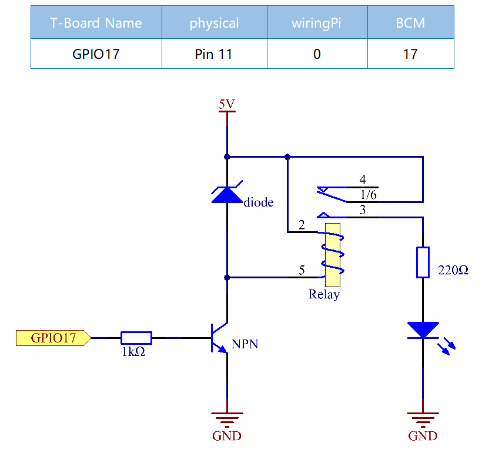
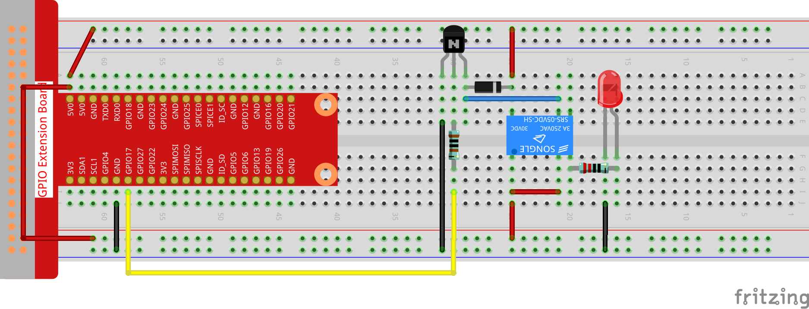

1.3.4 Relay¶
Introduction¶
In this lesson, we will learn to use a relay. It is one of the commonly used components in automatic control system. When the voltage, current, temperature, pressure, etc., reaches, exceeds or is lower than the predetermined value, the relay will connect or interrupt the circuit, to control and protect the equipment.
Components¶

Principle¶
Diode
A diode is a two-terminal component in electronics with a unidirectional flow of current. It offers low resistance in the direction of current flow and offers high resistance in the opposite direction. Diodes are mostly used to prevent damage to components, especially due to electromotive force in circuits which are usually polarized.

The two terminals of a diode are polarized, with the positive end called anode and the negative end called cathode. The cathode is usually made of silver or has a color band. Controlling the direction of current flow is one of the key features of diodes — the current in a diode flows from anode to cathode. The behavior of a diode is similar to the behavior of a check valve. One of the most important characteristics of a diode is the non-linear current voltage. If higher voltage is connected to the anode, then current flows from anode to cathode, and the process is known as forward bias. However, if the higher voltage is connected to the cathode, then the diode does not conduct electricity, and the process is called reverse bias.
Relay
As we may know, relay is a device which is used to provide connection between two or more points or devices in response to the input signal applied. In other words, relays provide isolation between the controller and the device as devices may work on AC as well as on DC. However, they receive signals from a microcontroller which works on DC hence requiring a relay to bridge the gap. Relay is extremely useful when you need to control a large amount of current or voltage with small electrical signal.
There are 5 parts in every relay:
Electromagnet - It consists of an iron core wounded by coil of wires. When electricity is passed through, it becomes magnetic. Therefore, it is called electromagnet.
Armature - The movable magnetic strip is known as armature. When current flows through them, the coil is it energized thus producing a magnetic field which is used to make or break the normally open (N/O) or normally close (N/C) points. And the armature can be moved with direct current (DC) as well as alternating current (AC).
Spring - When no currents flow through the coil on the electromagnet, the spring pulls the armature away so the circuit cannot be completed.
Set of electrical contacts - There are two contact points:
Normally open - connected when the relay is activated, and disconnected when it is inactive.
Normally close - not connected when the relay is activated, and connected when it is inactive.
Molded frame - Relays are covered with plastic for protection.
Working of Relay
The working principle of relay is simple. When power is supplied to the relay, currents start flowing through the control coil; as a result, the electromagnet starts energizing. Then the armature is attracted to the coil, pulling down the moving contact together thus connecting with the normally open contacts. So the circuit with the load is energized. Then breaking the circuit would a similar case, as the moving contact will be pulled up to the normally closed contacts under the force of the spring. In this way, the switching on and off of the relay can control the state of a load circuit.
Schematic Diagram¶
Experimental Procedures¶
Step 1: Build the circuit.
For C Language Users¶
Step 2: Open the code file.
cd /home/pi/davinci-kit-for-raspberry-pi/c/1.3.4
Step 3: Compile the code.
gcc 1.3.4_Relay.c -lwiringPi
Step 4: Run the executable file.
sudo ./a.out
After the code runs, the LED will light up. In addition, you can hear a ticktock caused by breaking normally close contact and closing normally open contact.
Code
#include <wiringPi.h>
#include <stdio.h>
#define RelayPin 0
int main(void){
if(wiringPiSetup() == -1){ //when initialize wiring failed, print message to screen
printf("setup wiringPi failed !");
return 1;
}
pinMode(RelayPin, OUTPUT); //set GPIO17(GPIO0) output
while(1){
// Tick
printf("Relay Open......\n");
digitalWrite(RelayPin, LOW);
delay(1000);
// Tock
printf("......Relay Close\n");
digitalWrite(RelayPin, HIGH);
delay(1000);
}
return 0;
}
Code Explanation
digitalWrite(RelayPin, LOW);
Set the I/O port as low level (0V), thus the transistor is not energized and the coil is not powered. There is no electromagnetic force, so the relay opens, LED does not turn on.
digitalWrite(RelayPin, HIGH);
set the I/O port as high level (5V) to energize the transistor. The coil of the relay is powered and generate electromagnetic force, and the relay closes, LED lights up.
For Python Language Users¶
Step 2: Open the code file.
cd /home/pi/davinci-kit-for-raspberry-pi/python
Step 3: Run.
sudo python3 1.3.4_Relay.py
While the code is running, the LED lights up. In addition, you can hear a ticktock caused by breaking normally close contact and closing normally open contact.
Code
#!/usr/bin/env python3
import RPi.GPIO as GPIO
import time
# Set GPIO17 as control pin
relayPin = 17
# Define a setup function for some setup
def setup():
# Set the GPIO modes to BCM Numbering
GPIO.setmode(GPIO.BCM)
# Set relayPin's mode to output,
# and initial level to High(3.3v)
GPIO.setup(relayPin, GPIO.OUT, initial=GPIO.HIGH)
# Define a main function for main process
def main():
while True:
print ('Relay open...')
# Tick
GPIO.output(relayPin, GPIO.LOW)
time.sleep(1)
print ('...Relay close')
# Tock
GPIO.output(relayPin, GPIO.HIGH)
time.sleep(1)
# Define a destroy function for clean up everything after
# the script finished
def destroy():
# Turn off LED
GPIO.output(relayPin, GPIO.HIGH)
# Release resource
GPIO.cleanup()
# If run this script directly, do:
if __name__ == '__main__':
setup()
try:
main()
# When 'Ctrl+C' is pressed, the child program
# destroy() will be executed.
except KeyboardInterrupt:
destroy()
Code Explanation
GPIO.output(relayPin, GPIO.LOW)
Set the pins of transistor as low level to let the relay open, LED does not turn on.
time.sleep(1)
wait for 1 second.
GPIO.output(relayPin, GPIO.HIGH)
Set the pins of the transistor as low level to actuate the relay, LED lights up.
Phenomenon Picture¶